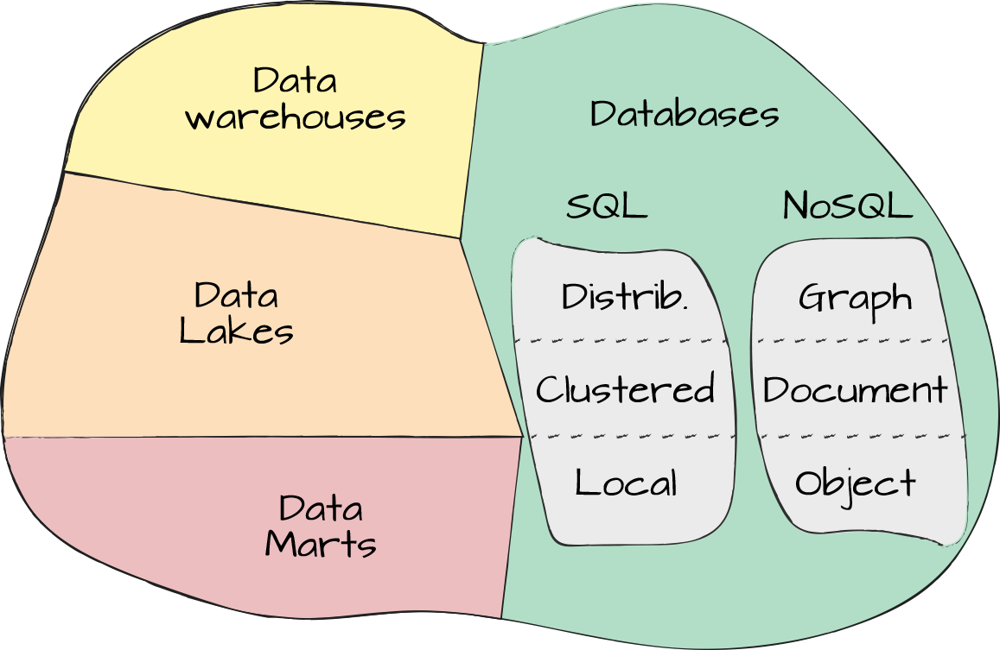
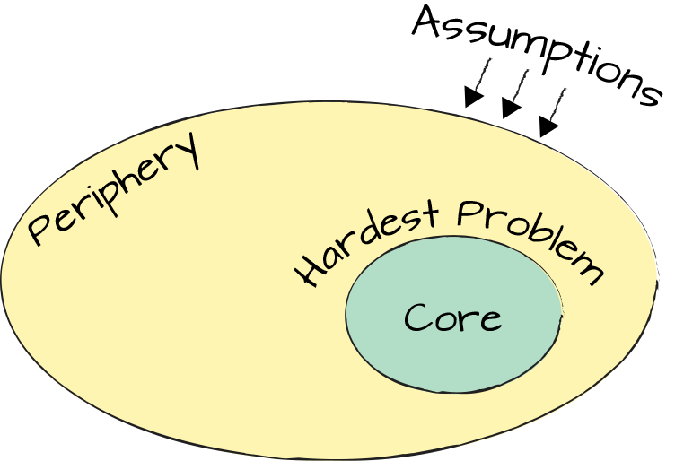

Without a Map, Any Road Looks Promising
Maps have been valuable tools for millennia, despite most of them, especially world maps, being quite badly distorted. The fundamental challenge of plotting the surface of a sphere onto a flat sheet of paper forces maps to make compromises when depicting angles, sizes, and distances—if the earth were flat, things would be much easier. For example, the historically popular Mercator projection provides true angles for seafarers, meaning you can read an angle off the map and use the same angle on the ship’s compass (compensating for the discrepancy between geographic and magnetic north). The price to pay for this convenient property, which avoids distorting angles, is area distortion: the further away countries are from the equator, the larger they appear on the map. That’s why Africa looks disproportionately small on such maps,1 a trade-off that might be acceptable when navigating by boat: misestimating the distance is likely a lesser problem than heading into the wrong direction.
Plotting the surface of a sphere also presents the challenge of deciding where the “middle” is. Most world maps conveniently position Europe in the center, supported by 0 degree longitude (the prime meridian) going through Greenwich, England. This depiction results in Asia being in the “East” and the Americas being in the “West.” The keen observer will quickly conclude that when living on a sphere, notions of West and East are somewhat relative to the viewpoint of the beholder. The same type of thinking likely motivated the residents of East Asia to historically put their country in the middle of the map and even name it accordingly: 中國 , the “middle kingdom.”
Although many centuries later we might regard such a world view as a tad self-centered, at the time it simply made practical sense: having the most detail about places that are near you makes putting your starting point in the middle of your map natural. It also roughly lines up the map boundaries with your travel limits.
IT landscapes are also vast, and navigating a typical enterprise’s range of products and technologies can be equally daunting to sailing Cape Horn. Despite some similarities, each IT landscape tends to be its own planet, making universal IT world maps hard to come by. Aside from some useful attempts like the Big Data Landscape by Matt Turck, enterprise architects therefore often rely on maps provided by their vendors.
As chief architect of a large company, you’ll quickly gather new friends: account managers, (presales) solution architects, field CTOs, and sales executives, to name a few. Their job is to sell their products to large enterprises like yours that rely heavily on external hardware, software, and services. It makes sense to buy systems that aren’t a competitive differentiator or to lease them via a software as a service (SaaS) model. Creating an accounting system yourself is in most cases as valuable as creating your own electricity. It’s important to have such things, but they won’t give you any competitive advantage. So just as you’re unlikely to benefit from operating your own power plant, you should also abstain from building your own accounting system.
Enterprise vendors are also an important source of information, especially for architects, as vendors keep close track of industry trends. Do keep in mind, however, that the information you are given might be skewed by the vendor’s worldview. That’s because enterprise vendors live in their own middle kingdom, generally depicting their home state disproportionately large and accepting a fair degree of distortion on the periphery. Distortion can take the form of vendors defining product categories or buzzwords by features that only their product has. For example, I have seen “Zero Trust” pegged to safe web browsing and “GitOps” tied to Kubernetes. Both are a stretch of imagination at best.
I often joke that if you have no concept whatsoever of what a car is and only ever talked to one specific German automaker, you’d end up walking away with the firm belief that a star emblem on the hood is a defining feature of an automobile.
IT architects in large enterprises must therefore develop their own, balanced worldview so that they can safely navigate the treacherous waters of enterprise architecture and IT transformation. Vendors’ distortion doesn’t imply deception; it’s largely a byproduct of the context people grew up in. If you develop databases, it’s natural to view the database as the center of any application: after all, that’s where the data is stored. Server and storage hardware are viewed as parts of a database appliance, whereas application logic becomes a data feed. Conversely, to a storage hardware manufacturer, everything else is just “data,” and databases are lumped into a generic “middleware” segment. It’s like me on my first trip to Australia considering a quick hop to New Zealand because I thought it was so super close. Realizing that it’s still a good three-and-a-half-hour flight from Melbourne to Auckland proved that my world map is also distorted on the periphery.
To avoid falling into the “star on the hood” or the “it’s all a database” trap, it’s important that your architecture team first develops its own, undistorted map of the IT landscape—a great exercise for enterprise architects (Chapter 4). Luckily, the world of IT is flat, so it’s a bit easier to plot on a whiteboard or a piece of paper. Your own map gives you a much better, product-neutral understanding and may, for example, illustrate that a car’s drive train is much more relevant than the hood emblem.
Any architect who carries a product name in their title likely carries the vendor’s map as opposed to your own.
It’s OK to draw the map piece-by-piece, starting, for example, where a new product needs to be set up or an old one replaced—rate of change (Chapter 3) is once again a good indicator for architecture. Another good starting point is where existing products represent critical differentiators for the company.
Drawing your map requires you to piece together information from various sources, which will often be distorted. Maybe one day we’ll have an AI-driven application that can do this for enterprise architecture the same way smartphones can stitch together multiple photos into a panorama. Until then, you have to collect information from vendors, blogs, industry analyst reports, and your infrastructure and development teams. Resist the temptation to simply ask your favorite two- or three-lettered enterprise supplier to make the map for you. For one, it will once again be distorted, and second, at today’s rate of innovation many of them are outdated, as well.
When placing countries and territories on your map, focus on function and relationships as opposed to product names.
Describing the architecture of a big data system as “Microsoft SQL Server” is no more useful than claiming the architecture of a house is “Ytong.”2 Both may be good choices, but neither describes the architecture.
Because IT architecture operates between the buzzwords and the product names, it’s less concerned with the pieces than with how they are put together. This is why it’s so important to look not only at the boxes but also the lines (Chapter 23).
Where to place the “borders” in your map is a key aspect of doing architecture in the enterprise. Although we all like to think of boundary-free architecture, if we want to establish a meaningful map and vocabulary for our enterprise, we need to place some borders. For example, should our “data” continent be separated into data warehouses, data lakes, data marts, and databases? Would databases then break down into relational and NoSQL databases, which could further break down into graph databases, object stores, and so on? Would you want to distinguish managed cloud databases like DynamoDB or Spanner from other databases? Would you want to separate operational databases from those used for analytics? There are many ways to slice, and defining these boundaries is a key element of doing architecture at an enterprise level. The word reference architecture even comes to mind, but you need to keep in mind that architecture isn’t a copy-paste exercises. You need to define the continents and countries that are meaningful for your organization, your business strategy, and your business architecture, as illustrated in Figure 16-1.

A colleague of mine conducted a thorough mapping exercise for application monitoring that includes black-box monitoring, white-box monitoring, troubleshooting, log analysis, alerting, and predictive monitoring. All are distinct but interrelated aspects of an application monitoring solution. Many vendors, especially those with a history in application performance monitoring, will also include performance testing because that’s the middle of their map. Whether you want to do the same or whether it’s part of the development tool chain is your decision.
When I see most reference architectures, I feel that they ought to print a disclaimer at the bottom, similar to those used for movies: “Any similarities with real persons or systems is purely coincidental.”
As soon as your IT world map has undisputed borders, you can start populating “countries” with vendor products that may be in use or available on the market. The map will help you assess how well a vendor’s product fits your map. Some products may not completely cover the gap, while others have significant overlap with solutions already in place.
Placing products on an IT world map is a bit like playing Tetris: the piece that fits best depends on what you already have in place. This means that rather than picking the “best” product, you should select the one that fits best.
Most large IT organizations govern their product portfolio (Chapter 32) via a standards group. Standards reduce product diversity and allow enterprises to harvest economies of scale; for example, by bundling purchasing power. When defining standards, the world map can be an enormous help because it can determine what kind of standards you’ll want and at which level you’d want to apply them. For example, defining different types of databases or data stores on your “database continent” can tell you whether you need a different standard for relational databases and NoSQL databases or whether you distinguish light-weight use cases from mission-critical ones. Having a good map is essential to navigating the complexity of vendor offerings.
A vivid example of the difficulty of discussing product fit without a good map came up in a conversation about a web portal: a divisional IT manager using a shared web portal lamented the lack of documentation on port forwarding. The project’s architect replied that a web server isn’t part of their solution, assuming port forwarding is done in a web server. Much debate and confusion ensued because the division implemented port forwarding in an integrated network management tool, not in a web server. They used different world maps and continued to talk past each other for some time.
Looking at the map to get the proverbial “lay of the land” can help a lot to resolve misunderstandings. For example, a map might show that port forwarding is part of the concept of an Application Delivery Controller (ADC), which manages web traffic by including functions such as reverse proxying, load balancing, and also port forwarding. You can utilize a web server as ADC in simple cases or purchase an integrated product like F5.
Ironically, conducting the worthwhile exercise of plotting your own IT world map can be challenged by traditional IT managers as “academic.” This can be especially amusing in Germany where IT management is littered with PhDs (not necessarily in any technical major) who carry the title “Dr.” as part of their legal name. If pragmatic means “haphazard,” I am happy to be in the “academic” camp: I am paid to think and plan, not to play product lottery.
When plotting vendor offerings onto your map, it’s not enough to just understand the vendor’s current product portfolio, but also where it is headed—the world of IT never stands still. That’s why I first like to understand whether a vendor’s and our worldviews align.
Meeting with vendors’ senior technical staff, such as a CTO, is most effective when discussing worldview and comparing maps because too many “solution architects” are just glorified technical salespeople, who navigate purely off the vendor’s map, the “middle kingdom” so to speak. I need a world map, though.
When an account manager starts the meeting with “please help us understand your environment,” which roughly translates into “please tell me what I should sell to you,” I typically preempt the exercise by asking the senior person about their product philosophy. It’s a bit of a big word, but it’s helpful in shifting the conversation to the vendor’s world map.
I prefer to ask vendors two key questions to understand their world map:
What base assumptions did you have to make? No one can operate on a completely empty map without borders, so the vendor must have made choices and picked boundaries. The answer to this question tells you where the edge of their map is.
What’s the toughest problem you had to solve? The answer to this question will tell you where the center of their map is.
Discussing what base assumptions and decisions are baked into a product gives you great insight into a vendor’s world map (see Figure 16-2), both about the center and the edge (remember the IT world is flat, so it has edges).

Naturally, this works only when talking to someone who is actually defining the vendor’s corporate or product strategy. Looking at the company leadership page can help you identify the right people. Looking at the leadership’s history can also help you understand “where they come from”; that is, under which assumptions they operate.
When asking these questions of a monitoring vendor, it became clear that the core of their map was being able to monitor running applications without having access to the source code. This feature is particularly useful if you look at the problem from an operational point of view, especially if you work in an organization that separates “change” from “run” (Chapter 12). However, in a “you build it, you run it” environment where development teams are directly involved in operational aspects, this intellectual property would be less valuable. You can end up paying for something that you don’t need. Understanding the vendor’s world map can help you make better decisions.
Comparing world maps isn’t about finding out which one is right and
which one is wrong; it’s about comparing worldviews. For example, I
believe that a good programming language and a disciplined software development life cycle (SDLC) beats “easy” configuration (Chapter 11). That’s because I come
from a software engineer mindset. Other folks might be happy to not have
to hassle with git stash and compilation errors and prefer the
vendor’s configuration tools.
While the real world is relatively static (continental drift is pretty slow and the trend of splitting countries in the ’90s has also slowed down a bit), the world of IT is changing faster than ever. Because it’s difficult for a vendor to change its product philosophy, you will likely encounter old products with a new coat of paint on it. Your job as an architect is to look through the shiny new paint and see whether there’s any rust or filler underneath.
1 “The True Size Of Africa,” Information Is Beautiful, Oct. 14, 2010, https://oreil.ly/yeVps.
2 Ytong is the name of a popular brand of aerated concrete bricks used in Europe for building construction.